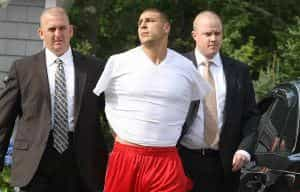

< < < Back
What The Media Wont Tell You About The Aaron Hernandez Tragedy – Return Of Kings
Most people in the free world, sports fans or not, are familiar with the Aaron Hernandez saga. The reader’s digest version is that he, Hernandez, was convicted in ’15 for the murder of Odin Lloyd, a semi-professional football player and was sentenced to life in prison without the possibility of parole.
Hernandez was later indicted on double homicide charges stemming from a double murder in 2012 but was acquitted last month. Five days after he beat those charges, however, the former New England Patriots tight end took his own life in his Massachusetts prison cell at just 27 years old, leaving behind his fiancee (Shayanna Jenkins) and 4 year old daughter.
The main question that’s been echoed throughout the media since his arrest back in ’13 for the Lloyd murder was how could a man who had achieved ultimate success by becoming a professional athlete and acquiring generational wealth turn cold-blooded killer? How could a man who had everything, financial security, a fiancee, a daughter, along with fame and fortune throw it all away over a misunderstanding at a night club?
How it started
Any man with red pill awareness knows that fathers play a huge role in the successful upbringing of strong masculine sons, both physically and mentally. Hernandez obviously had elite physical traits but his mental state was severely lacking.
A few months after his arrest for the Odin Lloyd murder Rolling Stone published an article entitled The Gangster In The Huddle which chronicled the life and times of Aaron Hernandez from his childhood to his seemingly inevitable first degree murder conviction.
I read the article intently before coming up on this paragraph about Aaron’s father, Dennis:
…in January 2006, Dennis checked himself in for a hernia repair at a local hospital. Something happened on the table, though, and he contracted an infection; two days later, he was dead. He was 49, in otherwise splendid health, and beloved by virtually everyone in town.
Hernandez was just 16 when he lost his father. According to the article, Aaron was “shocked beyond tears” and sat expressionless at the funeral while his older brother, D.J., sobbed uncontrollably over the casket.
Young Hernandez and older brother D.J.
By all accounts, Dennis was a good father to the Hernandez brothers. He built them a make shift gym in the family basement so they could train (he recognized both of his sons were athletically gifted from a young age), made sure their homework was completed on time and quizzed them on picking up blitz’s or offensive assignments. He also made sure his sons weren’t subjected to the perils of the streets that plagued his own childhood:
Dennis sheltered them from that life with all his might,” says Gary Fortier. “He was the perfect dad: He went to every scrimmage, and got ’em up at dawn to work out,”

D.J. was like a second father to Aaron
Losing his father at an age where boys need them the most nearly damaged Hernandez beyond repair. He still had his older brother, who was much like their father as far as discipline and work ethic went, but a series of events that occurred before and after Dennis’ death put the finishing touches on Aaron’s transformation from a kid who was a happy-go-lucky goofball into a man with homicidal (and later suicidal) tendencies and an insatiable need for violence.
His mother was not a good influence
As good a father as Dennis was, their mother, Terri was the polar opposite. People who knew the family said she brought a lot of drama into the Hernandez household. In 2001 she was busted for running an illegal sports book when Aaron was just 12. She didn’t do any time but that event was the start of a a rift between her and Aaron. Her subsequent affair with a drug dealer put the nail in the coffin:
Friends say Terri had begun cheating on Dennis with a physically abusive coke dealer named Jeffrey Cummings, who was married to Dennis’ niece, Tanya Cummings.
Terri’s relationship with Cummings, whose nickname is Meathead, was a bottomless source of grief for the sons. There was an ugly spectacle in the stands at a UConn game, says a family friend. Terri, on hand to watch DJ play, was angrily confronted by her niece and slapped in the face. The aftermath, says the friend, “hurt Aaron bad and broke his heart.”
He might have held it together, or handled the fallout better, if Dennis had been around to see him through it. But in January 2006, Dennis checked himself in for a hernia repair at a local hospital…
As stated earlier, Dennis died just two days later.

Terri (left), D.J. (center) at Hernandez’s murder trial
But it doesn’t end there:
Heartsick and furious, Aaron seemed to implode. “He would rebel,” Terri told USA Today in an interview three years later. “He wasn’t the same kid, the way he spoke to me. The shock of losing his dad, there was so much anger.” Small wonder there: She moved Cummings into the house she shared with Aaron, and married him when his divorce from Tanya was final.
To no one’s great surprise, cops soon fielded phone calls that Cummings was abusing Terri. “We responded to that address on more than one occasion,” says Detective Lt. Kevin Morrell of the Bristol P.D. In June 2010, Cummings got drunk one night and flew into a rage. Grabbing a knife from the kitchen, he slashed Terri’s face and body before she fled to her neighbors next door. Cops arrested Cummings in the yard and charged him with assault and sent him to prison for two years. Terri divorced him that year, but took him back, say friends, when he was released in 2012.
A bad father negatively affects the lives and mental well being of both boys and girls. An absentee father sometimes magnifies those problems.
A bad mother can also negatively affect children in a negative way but those affects can be mitigated and sometimes even eliminated by a good father. Same thing applies with an absentee mother.

Hernandez is arrested for the murder of Odin Lloyd
But a good father who is lost too soon combined with an unfaithful mother who acts selfishly and clearly has no regard for the psyche of her sons as a result of her actions has deadly consequences. The multiple victims Aaron Hernandez left in his wake, Odin Lloyd, Shayanna Jenkins, her daughter Avielle, and Hernandez himself all suffered will continue to suffer those consequences for the rest of their lives.
Am I absolving Hernandez?
Of course not. Regardless of our upbringing and experiences, we’re all born with a fundamental understanding of the difference between right and wrong. Aaron Hernandez was wrong for killing Odin Lloyd and deserved the sentence he received.
What was lost in the narrative, however, was the effect his poor excuse of a mother had on him at a young age what with her illegal exploits and affair with a violent drug dealer whom she eventually married and moved into the home she shared with her sons. The media speculated and analyzed his life ad nauseam searching for possible explanations for his metamorphosis into a cold blooded killer.
But men here know how and why bad mothers ruin their children for life as the proof is all around us every day. And as usual the left leaning media conveniently leaves out the female’s role and responsibility in any tragedy. The saga of Aaron Hernandez was no different.
Check out Donovan’s podcast The Sharpe Reality on thesharpereality.com or his YouTube channel
Read Next: How Professional Athletes Show Us The Importance Of Fathers